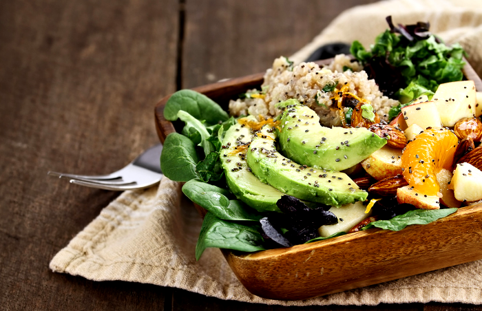

خطة الوجبات
لكي نشعر بحالة جيدة، نحتاج إلى تناول طعام صحي، متنوع ومنتظم. نحتاج إلى الحصول على نفس كمية الطاقة التي نستهلكها. نسمي هذا توازن الطاقة. يتم قياس كمية الطاقة التي نحصل عليها من خلال طعامنا والتي نحرقها من خلال العمل غالباً بالكيلو كالوري. عادةً نقول فقط سعرات حرارية عندما نتحدث عن كمية الطاقة، لكننا نقصد في الواقع كيلو كالوري. توازن الطاقة يعني إذن أننا نحرق تقريباً نفس عدد السعرات الحرارية التي نتناولها. إذا كنا نشيطين بدنياً، فإننا نحرق المزيد من الطاقة – وبالتالي نحتاج إلى تناول المزيد أيضاً. الأطفال والمراهقون الذين لا يزالون في طور النمو يحتاجون أيضاً إلى الحصول على مزيد من الطاقة مقارنة بحجم أجسامهم مقارنة بالبالغين. وذلك لأن النمو يتطلب طاقة.
يشعر الجسم بتحسن بعدة طرق إذا حصل على كميات صغيرة من الطاقة عدة مرات في اليوم بدلاً من كميات كبيرة في مناسبات متفرقة. وبهذه الطريقة يُحافظ على مستوى السكر في الدم بشكل أكثر توازناً. تنظيم جيد للنظام الغذائي هو:
- إفطار
- وجبة خفيفة
- غداء
- وجبة خفيفة
- عشاء
قد تكون هناك حاجة إلى وجبة مسائية إضافية إذا كنت تتدرب في المساء. ومع ذلك، ليس من الجيد تناول الطعام قبل النوم مباشرة، لأن عملية الهضم قد تعيق النوم.
تناول الوجبات الخفيفة أكثر من الجدول الغذائي المذكور أعلاه يمكن أن يؤدي إلى آثار سلبية على النظام الغذائي – خاصة إذا تناول الشخص في تلك الأوقات أطعمة غير صحية وخالية من القيمة الغذائية، مثل الكعك أو الحلوى. قد يؤدي ذلك إلى انخفاض الشهية للوجبات الرئيسية. وبدلاً من ذلك، قد يشعر الشخص برغبة في تناول شيء سريع ولذيذ مرة أخرى قبل موعد الوجبة الرئيسية.